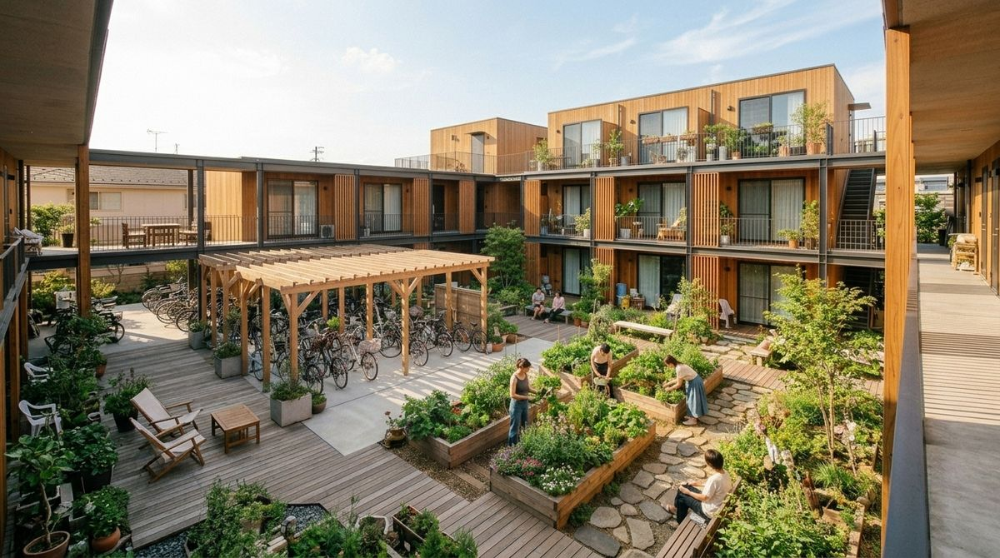
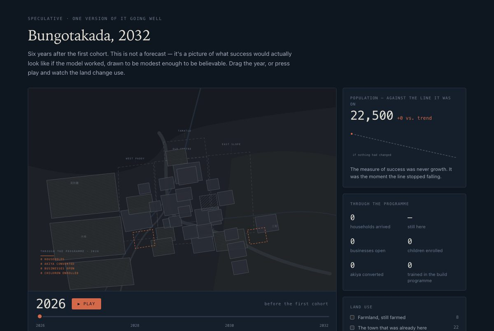

49人がもう「行く」と言った。残り7枠。
これは、5年後のMusubuを画面として描いたものです。人口4,000人の町のシェアハウス、部屋はほとんど埋まっていて、締め切りがあり、埋まらなければ全員に預り金が戻ります。この画面の数字はどれも、先に決めた誰かが置いたものです。
7分 · まだ何も作られていません · すべての画面は例です
作業中のページです。 この日本語版はAIによる下訳で、まだ日本語のネイティブの方に見てもらっていません。おかしなところがあれば、それ自体が教えてほしいことです。
musubu.jp / kamisato
ログイン中
集まり中
旧大橋旅館のシェアハウス
上里（架空の町）、大分 · 2027年4月入居 · 月42,000円（光熱費込み）
49 / 56 人が約束済み 残り7枠
誰が来るか
- 20代 · 41%
- 30代 · 38%
- 40代以上 · 21%
3月14日締め切り。それまでは全額返金。埋まらなければ何も起きず、全員に預り金が戻ります。
集まり中
診療所の受付、週3日
上里医療協同組合 · 必要な6つの役割のうち4つが埋まった時点で募集を開始
3 / 6 の役割が埋まった
予定
町民集会：製材所をどうするか
木曜 19:00 · 中央公民館 · まだ引っ越していない人も参加できます
暮らし
中村さん一家が火曜日に到着
川崎から。子どもは6歳と9歳。土曜に歓迎の夕食、何か一品持ち寄りで。
例です。上里は実在の町ではなく、数字もすべて架空です。主張しているのは画面の「かたち」であって、数字ではありません。
この画面にできて、パンフレットにできないこと
日本の移住案内は、どれもパンフレットです。棚田の写真、補助金の額、電話番号。パンフレットは、場所の説明を信じてくださいと言います。本当に知りたいたった一つのこと、ほかに誰か来るのかには答えられません。
シェアハウスの札は、四つの問いに同時に答えていて、どれも形容詞では答えていません。49人がもう決めているので、あなたが最初ではない。ほとんどが20代と30代なので、台所の様子が想像できる。2027年4月に開くので、「いつか」ではなく日付がある。そして埋まらなければ預り金が戻るので、早く「行く」と言っても何も失わない。
その下には、役割が埋まれば開く診療所があり、住む前から参加できる町民集会があり、火曜日に着いた一家がいます。これは宣伝サイトではありません。予定表のある場所で、そこに自分の名前が入るところが見える。

イメージ画像（AI生成、2026年8月）。実在の建物ではありません。
計器盤の残り
あの札は、もっと多くのものを載せた町のページの上にあります。自分たちで再生を進めている町には、把握しておくべきことがたくさんあるからです。何もしなかった場合と比べた人口。どの建設が資金を得ていて、どこまで進んでいるか。どの参加条件が生きていて、どれがまだ足りず、どれが静かに流れたか。この12か月で何が開いたか。事業の各段階が、次に進む前に何を必要としているか。
町の集まり
31 / 50 世帯
50で一斉に始動。締め切りまで9週間。
人口
2,847
前年比 +2.3%。予測では1.5%の減少だった。
デジタル拠点の建設
84%
4,500万円のうち3,800万円が確定。2028年第2四半期に開設。
共同菜園
18 / 15
条件達成
定員超過。2つ目の区画を調査中。
保育の枠
12 / 20
あと8世帯で職員を配置できる。
地ビール醸造所
0 / 25
流れた
3月に提案、誰も申し込まず。ページには残る。
例です。町のページが載せるであろう6つのパネル。町は実在しません。

試作品のスクリーンショット。豊後高田市を舞台に、2026年から2032年までの「うまくいった場合」を描いた地図。数字はすべて創作で、ページにもそう書いてあります。試作品を開く（英語）
どれも飾りではありません。一つひとつが、実在の誰かが決めなければならないことだからです。そして、同じ組み合わせを必要とする町は二つとありません。醸造所のない町に醸造所のパネルはない。パネルは、測る対象が存在し始めたときに現れ、それが止まってもそこに残ります。勝ちしか見せない画面は、誰も計画を立てられない画面だからです。
設計する価値があるのは、この性質です。 決まった画面の一式をどの町にも配る製品ではなく、町とそこに来る人たちが一緒に組み立て、やっていることが変わるたびに並べ替え続ける計器盤。1年目に必要な信号は、4年目に必要な信号ではありません。
その下にある循環
画面は出力です。それを生み出しているのは一つの循環で、作る価値があるのはその循環のほうです。
-
何が本当に自分を止めているかを言う
自分の言葉で。誰かが用意した8つのチェックボックスではない調査で。5万件のなかでいちばん役に立つ答えは、たいてい誰も選択肢として思いつかなかったものです。
-
それが数になる
順位づけされ、層別され、全国規模で。日本のどの省庁も「移住を考える人がいる」ことは知っています。人生の段階と場所ごとに、何が正確に止めているのかの地図を持っている人は誰もいません。
-
誰かが一つ取り除く
政策は、願いよりも障害に対してのほうがずっと書きやすい。保育の枠。19時以降も走るバス。転用された建物。緩められた補助金の条件。去年はなかった仕事。
-
選択肢が画面に現れる
そしてそれは、数と締め切りのついた、実在の人が約束できる実在のものになっています。
そのあと、障害を名指しした本人が、それが動くのを見ることになります。頼りにする価値があるのは、この仕組みです。移住サイトではなく、何が邪魔なのかを言い、それが取り除かれるのを見る方法。
三者、一つの記録
この循環が閉じるのは、個人と、町と、地域政策に資金を出す国の事業が、同じ場所に書き込んでいるからです。今は三者がそれぞれ、ほかの二者を推測していて、その推測が問題の大半です。
全員が同じ記録に書き込み、それぞれ別の見え方で読み出す。記録が製品で、見え方はその窓口です。
つまり、一つの出来事が三つの言葉づかいで同時に届かなければなりません。中村さん一家が上里に約束したことは、同じ一つの事実が三通りに書かれたものです。
あなたに見えるもの
あと9世帯で、来年4月に小学校のクラスができます。預り金は締め切りまで返金できます。
町の担当者に見えるもの
第3四半期の到着で、児童数が学級編制の基準を超える。予算要求の受付は11月まで。
省庁に見えるもの
10歳未満の子どものいる約束済み世帯が、この県で前四半期比で増加。既存の移住支援金の対象圏内に、新たに2つの自治体。
例です。一つの約束が、三通りに描かれる。
なぜ、その数を信じられるのか 実績あり
すべては、数が本物であることに乗っています。それを本物にする仕組みは、古くて退屈です。全員か誰もか、の条件付きの約束。公開された数、決まった締め切り、本当に戻る預り金。条件が満たされるまで何も動かず、決めるあいだ、誰もが数が上がっていくのを見ていられる。
これは世帯の話にとどまりません。そこが、ウェブサイトをインフラに変える部分です。
| 誰が | 何を約束するか | いつ解除されるか |
|---|
| 世帯 | 預り金、到着日 | 集まりの人数が条件に達したとき |
| 小さな事業者 | 賃貸契約と開店日 | 客の事前の約束が条件に達したとき |
| 工場などの雇用主 | 設備投資 | 働き手の人数が条件に達したとき |
| 開発事業者 | 改修や建設の着工 | 住戸が事前に埋まったとき |
| 自治体 | 予算項目、補助金の申請 | 人口の約束が条件に達したとき |
| 学区 | 学級の編制 | 児童数が条件に達したとき |
クラウドファンディングは2009年にこれを世に出しましたが、日本は何百年も前から社会の側でこれを回してきました。講は、お金を出し合って順番に受け取る相互扶助の集まりです。「集まったら動く」仕組みに、何百年もの地元の前例がある。ここでは、ソフトウェアについてのどんな議論より、その事実のほうが重い。
数が信じられ続けるのは、その周りの画面が誰にも媚びないときだけです。五つのルール。これは譲歩ではなく、見知らぬ人がこの画面をそもそも信じる理由です。
- 空っぽは、空っぽのまま見せる。 何も起きていない町は、何も載っていない画面を見せる。埋め草も、素材写真も、「近日公開」もなし。
- 失敗は見えたままにする。 流れた条件は地図に残る。閉じた店はページに残る。出ていった住人も、載ったまま、連絡が取れるままにする。
- そこに住む人だけが投稿する。 町の記事を代わりに書く広報チームはいない。参加者が撮った少し下手な写真は、信頼の印。
- 順位づけなし、注目の最適化なし、無限スクロールなし。 これは村の掲示板です。注目を集めるよう最適化した瞬間に、本当ではなくなる。
- 「約束済み」と「見込み」を決して混ぜない。 これから来る人の曲線は約束だけを示す。家族も事業者も、その数を見て取り返しのつかない決断をするからです。
AIが働くところ
記録そのものは、わざと単純にしてあります。約束、数、締め切り、返金を、普通の監査できる台帳に。考える部分はその周りにあって、データベースへの問い合わせでは済まない仕事が五つあります。
調査が、自由な問いを立てられる 検証可能
選択肢を先に決めた調査は、作り手がすでに想像していたものしか返してきません。区分が天井だからです。自由記述をいま、全国規模で読み、まとめ、引用できるようになったので、調査は「それでも何があなたを止めますか」と聞き、誰も予想していなかった答えから学べます。循環の一歩目は、まるごとこれに依存しています。
一人のために書かれた提案 検証可能
人生の段階、動かせない条件、必要な収入、人づきあいの好み、移動のしやすさ、時期をまたいで合わせるのは、十いくつもの考慮が競う判断です。出力は、特定の人に向けて、その人自身の言葉を引きながら描かれた、特定の暮らしです。それを5万件つくることは、数年前ならどんな値段でも不可能でした。
断られたものから学ぶ 検証可能
三つの選択肢を見せ、なぜ断られたかを自由記述で読み、次の問いを選ぶ。誰かが「孤立しすぎているし、ずっと演じているような気がしそう」と書いたとき、大事なのは文の後半です。人は自分が何を望むかは言えませんが、目の前のものの何が違うかは即座に言えます。
一つの記録、三つの言葉づかい スケッチ
これは前例のない部分です。どの出来事も、世帯と、町の担当者と、省庁の分析官に、それぞれが働いている言葉で届かなければならない。今その翻訳は人が、ゆっくりと、そしてたいていはまったく行っていません。三者に共有の眺めがこれまで一度もなかったのは、まさにそのためです。
国を、その国の言葉で読む 実績あり
自治体のデータ、県の統計、事業の文書が、たまたま翻訳されたものを通してではなく、一次資料として読めるようになります。同じ能力で、調査を日本語、英語、ベトナム語、タガログ語、ポルトガル語、ネパール語で同時に走らせられます。介護人材の移住は、この経済の周辺ではなく中心にあるので、これは大事です。
はっきり言っておく価値のある帰結。 かつて15人必要だったことを、いま3人のチームが回せます。町の情報、調査の分析、事業の調査、翻訳、ページの内容、そしてこういう構想が生きていくための継続的な整理。これは費用削減ではありません。大きな組織が必要なものと、作りたい数人が実際に始められるもの、の違いです。
今、本当のこと
あるもの戦略の文書群と、いくつかの試作ページ。動いているシステムはなく、集まりもなく、町との提携もなく、まだ誰にも調査していない。
未検証提案がよかったかどうかは、誰かが引っ越して住み続けて初めてわかるので、マッチングには何年も答え合わせがない。
未解決預り金。誰が世帯の預り金を、どの許認可のもとで、どの法域で預かるのか。
不明工場などの雇用主が、公開の条件付きの立場を取るのか、それとも守秘の都合で最初から無理なのか。
ありうる考える層は飾りで、最初に動く版は三つの表と夜間の処理と進捗バーだけ、ということ。それなら朗報です。
保留下にある全国版。名前をつけ、印をつけ、あえてまだ手をつけていない。
最初の版に、町も、省庁も、提携も要りません。要るのは、まだ何も裏付けのない公開の数と、存在しないものに名前を書く気のある人が十分にいること。それが、唯一大事な前提を試す、いちばん安い方法です。
もっと大きな版 スケッチ
シェアハウスは小さな版で、最初に作る価値があるのはそちらです。その下にあるもっと大きな考えは、人々が本当に何を望み、何が本当に邪魔なのかの、常設の全国の記録です。閉じた日から劣化が始まるスナップショットの調査ではなく、どの市民も書き込めて、自分の人生が動くたびに更新し続けられるもの。
その記録は、触れる全員にとって価値があります。個人は、自分と同じ状況の4,000人が同じことを言ったと知ることができ、それは私的な不満と目に見える集団との違いです。町は、都市の家族が何を望むかの推測ではなく、本物の需要を得ます。省庁は、順位づけされ層別された障害の地図を得ます。政策が実際に書かれるかたちは、それです。
いまになって初めて試せる部分は、それを一度設計して凍らせなくてよい、ということです。チェックボックスではなく自由な言葉で聞き、全国規模で読み、人が違うものを必要とし、それを作る道具が現れるにつれて、かたちを変え続けることを許せる。完成した製品ではなく、生きている台帳。
スケッチと印をつけたのは、そういうものだからです。仕様も、費用も、検証もなく、解決ではなく保留。ここにあるのは、これが小さな版を始める価値の理由だからです。
招待
仕組みの下には、もっと素朴な申し出があって、住居費についてのどんな文よりも、人がなぜ気にかけるかに近いものです。
生きていて、変わり続けて、合わせていけるもの。選択肢が見えて、選択肢を作れて、本当に共有された知恵と意図があって、実験してみることができる。
そんなことができる人が、どれだけいるだろう。違う暮らしを試す。もっと意図をもって生きる。何かの一部になる。
ほとんどの大人は、どう生きるかを本気で選ぶ機会を一度しか持たず、それを22歳で、追われながら決めて、その後きちんとやり直す機会は来ません。ここで差し出しているのは、その実験をまともにやり直す方法です。ほかの人と一緒に、戻る道を残して、一人で勇気を出さなくてもいいように。
このノートの目的
ここに、何かの種はありますか。
問いはそれだけで、もう少し細かい版が下にあります。全部に賛成してもらうより、どれか一つへの答えのほうが価値があります。
- 全国版は現実的ですか。 どの市民も書き込める共有の台帳で、政策が実際にそれに対して書けるほど読みやすいもの。その規模で読めるのはAIがあるからです。それは成り立ちますか、それとも明らかなどこかで崩れますか。
- 変化に合わせて作るのは、強みですか、言い訳ですか。 一度設計するのではなく、人が必要とするたびに新しい道具や窓口を生やし続けるつもりです。それは要点そのものか、何も出荷しないための上手な言い訳か。
- 何かが変わりますか。追いかける価値がありますか。 率直に。正直な答えは「いいえ」かもしれず、それは今知れたら役に立ちます。
- 何を直しますか。どの糸から引きますか。 作業の順番は、内側からはいちばん見えにくい部分です。
- 上に挙がっていない障害は何ですか。 わかっているのは、預り金の扱い、何年もマッチングの答え合わせがないこと、町に「はい」と言ってもらう必要があること。面白いのは、この構想の誰も思いついていないものです。